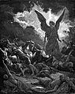

|
|
|
2 Chronicles 32
|
|
| 32:1
After these things, and the establishment thereof, Sennacherib king of
Assyria came, and entered into Judah, and encamped against the fenced
cities, and thought to win them for himself. |
|
| 32:2
And when Hezekiah saw that Sennacherib was come, and that he was purposed
to fight against Jerusalem, |
|
| 32:3
He took counsel with his princes and his mighty men to stop the waters of
the fountains which were without the city: and they did help him. |
|
| 32:4
So there was gathered much people together, who stopped all the fountains,
and the brook that ran through the midst of the land, saying, Why should the
kings of Assyria come, and find much water? |
|
| 32:5
Also he strengthened himself, and built up all the wall that was broken,
and raised it up to the towers, and another wall without, and repaired Millo
in the city of David, and made darts and shields in abundance. |
|
| 32:6
And he set captains of war over the people, and gathered them together to
him in the street of the gate of the city, and spake comfortably to them,
saying, |
|
| 32:7
Be strong and courageous, be not afraid nor dismayed for the king of
Assyria, nor for all the multitude that is with him: for there be more with
us than with him: |
|
| 32:8
With him is an arm of flesh; but with us is the LORD our God to help us,
and to fight our battles. And the people rested themselves upon the words of
Hezekiah king of Judah. |

 (32:8) "With us is the LORD our God to help us,
and to fight our battles." (32:8) "With us is the LORD our God to help us,
and to fight our battles."
|
| 32:9
After this did Sennacherib king of Assyria send his servants to Jerusalem,
(but he himself laid siege against Lachish, and all his power with him,)
unto Hezekiah king of Judah, and unto all Judah that were at Jerusalem,
saying, |
|
| 32:10
Thus saith Sennacherib king of Assyria, Whereon do ye trust, that ye abide
in the siege in Jerusalem? |
|
| 32:11
Doth not Hezekiah persuade you to give over yourselves to die by famine
and by thirst, saying, The LORD our God shall deliver us out of the hand of
the king of Assyria? |
|
| 32:12
Hath not the same Hezekiah taken away his high places and his altars, and
commanded Judah and Jerusalem, saying, Ye shall worship before one altar,
and burn incense upon it? |
|
| 32:13
Know ye not what I and my fathers have done unto all the people of other
lands? were the gods of the nations of those lands any ways able to deliver
their lands out of mine hand? |
|
| 32:14
Who was there among all the gods of those nations that my fathers utterly
destroyed, that could deliver his people out of mine hand, that your God
should be able to deliver you out of mine hand? |
|
| 32:15
Now therefore let not Hezekiah deceive you, nor persuade you on this
manner, neither yet believe him: for no god of any nation or kingdom was
able to deliver his people out of mine hand, and out of the hand of my
fathers: how much less shall your God deliver you out of mine hand? |
|
| 32:16
And his servants spake yet more against the LORD God, and against his
servant Hezekiah. |
|
| 32:17
He wrote also letters to rail on the LORD God of Israel, and to speak
against him, saying, As the gods of the nations of other lands have not
delivered their people out of mine hand, so shall not the God of Hezekiah
deliver his people out of mine hand. |
|
| 32:18
Then they cried with a loud voice in the Jews' speech unto the people of
Jerusalem that were on the wall, to affright them, and to trouble them; that
they might take the city. |
|
| 32:19
And they spake against the God of Jerusalem, as against the gods of the
people of the earth, which were the work of the hands of man. |
|
| 32:20
And for this cause Hezekiah the king, and the prophet Isaiah the son of
Amoz, prayed and cried to heaven. |
|
| 32:21
And the LORD sent an angel, which cut off all the mighty men of valour,
and the leaders and captains in the camp of the king of Assyria. So he
returned with shame of face to his own land. And when he was come into the
house of his god, they that came forth of his own bowels slew him there with
the sword. |
(32:21) "The LORD sent an angel, which cut off all the mighty men of valour,
and the leaders and captains in the camp of the king of Assyria. So he returned with shame of face to his own land. And when he was
come into the house of his god, they that came forth of his own bowels slew him there with the sword."
God sent an angel to kill the Assyrian army. (According to
2 Kg.19:35 the angel killed 185,000 sleeping soldiers who
woke the next morning to discover that they were dead.)
God's 114th and
115th Killings
Destruction of the army of Sennacherib
(Gustave Dore, 1865)
|
| 32:22
Thus the LORD saved Hezekiah and the inhabitants of Jerusalem from the
hand of Sennacherib the king of Assyria, and from the hand of all other, and
guided them on every side.
|
| 32:23
And many brought gifts unto the LORD to Jerusalem, and presents to
Hezekiah king of Judah: so that he was magnified in the sight of all nations
from thenceforth.
|
| 32:24
In those days Hezekiah was sick to the death, and prayed unto the LORD:
and he spake unto him, and he gave him a sign.
|
| 32:25
But Hezekiah rendered not again according to the benefit done unto him;
for his heart was lifted up: therefore there was wrath upon him, and upon
Judah and Jerusalem. |
|
| 32:26
Notwithstanding Hezekiah humbled himself for the pride of his heart, both
he and the inhabitants of Jerusalem, so that the wrath of the LORD came not
upon them in the days of Hezekiah. |
|
| 32:27
And Hezekiah had exceeding much riches and honour: and he made himself
treasuries for silver, and for gold, and for precious stones, and for
spices, and for shields, and for all manner of pleasant jewels; |
|
| 32:28
Storehouses also for the increase of corn, and wine, and oil; and stalls
for all manner of beasts, and cotes for flocks. |
|
| 32:29
Moreover he provided him cities, and possessions of flocks and herds in
abundance: for God had given him substance very much. |
|
| 32:30
This same Hezekiah also stopped the upper watercourse of Gihon, and
brought it straight down to the west side of the city of David. And Hezekiah
prospered in all his works. |
|
| 32:31
Howbeit in the business of the ambassadors of the princes of Babylon, who
sent unto him to enquire of the wonder that was done in the land, God left him,
to try him, that he might know all that was in his heart. |
 (32:31) "God left him, to try him, that he might know all
that was in his heart." (32:31) "God left him, to try him, that he might know all
that was in his heart."
God has to test Hezekiah to see what is in
his heart.
Does God know what is in everyone's heart?
Does God know everything?
|
| 32:32
Now the rest of the acts of Hezekiah, and his goodness, behold, they are
written in the vision of Isaiah the prophet, the son of Amoz, and in the
book of the kings of Judah and Israel. |
|
| 32:33
And Hezekiah slept with his fathers, and they buried him in the chiefest
of the sepulchres of the sons of David: and all Judah and the inhabitants of
Jerusalem did him honour at his death. And Manasseh his son reigned in his
stead.
|
|


{kind=link}